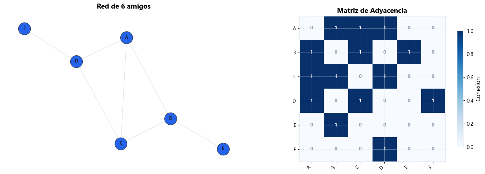
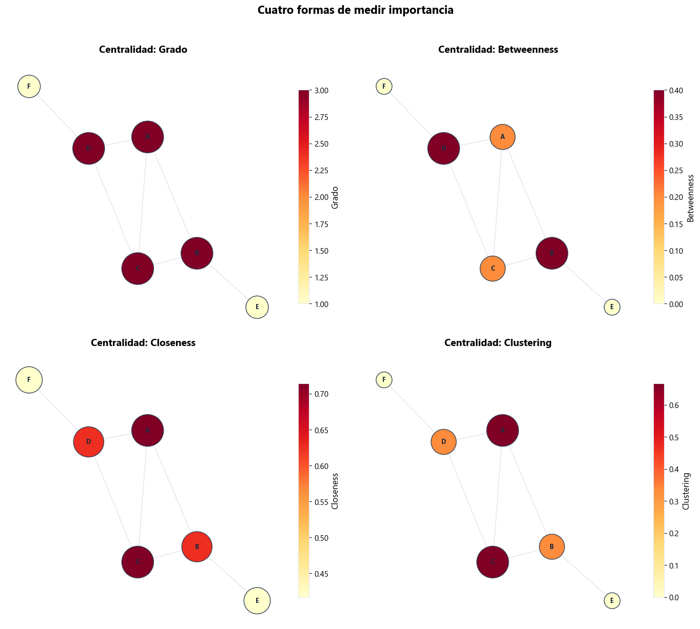
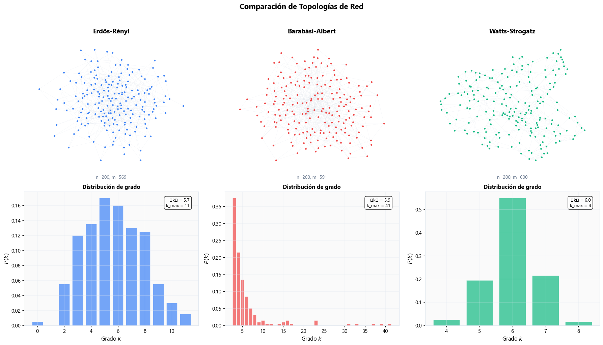
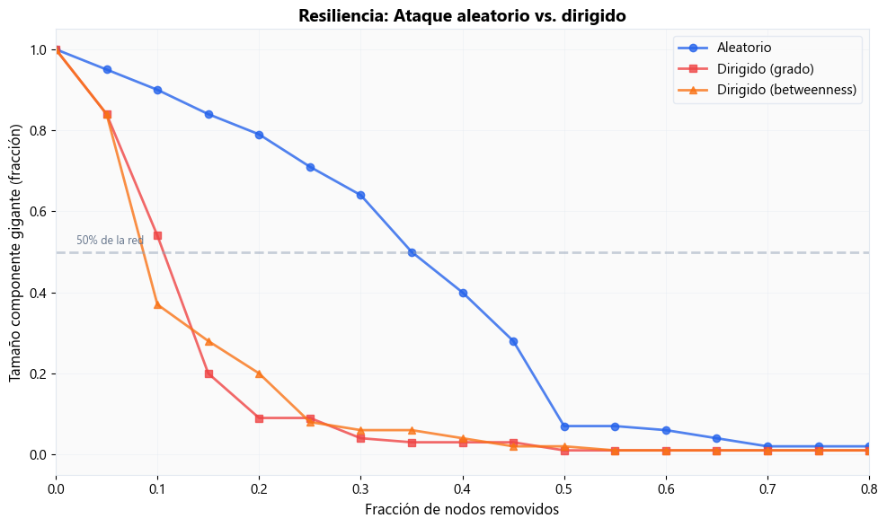
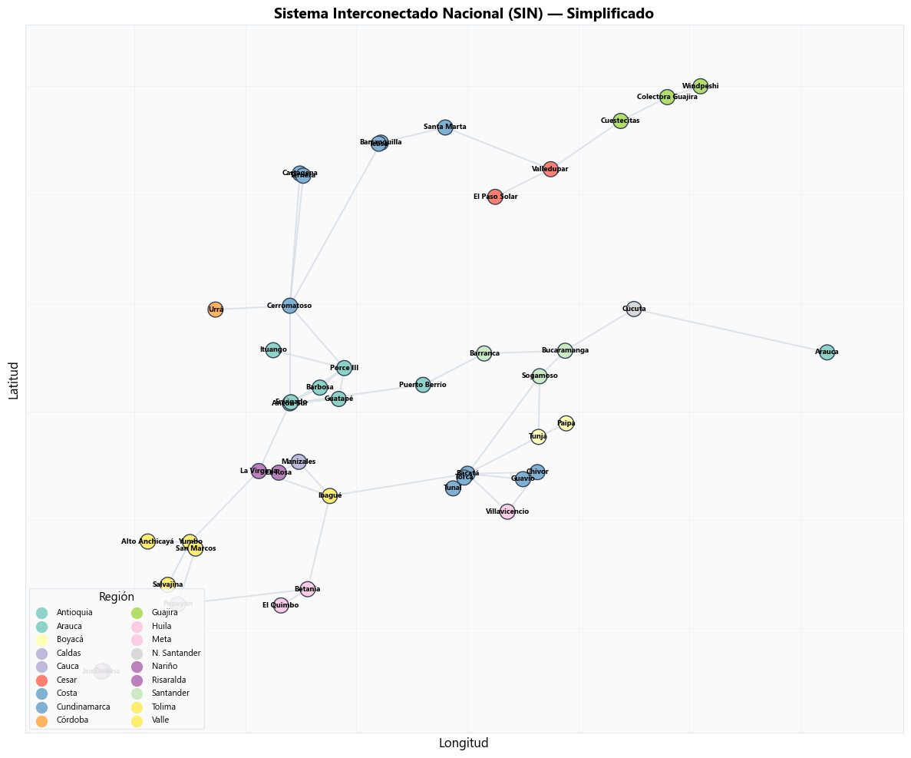
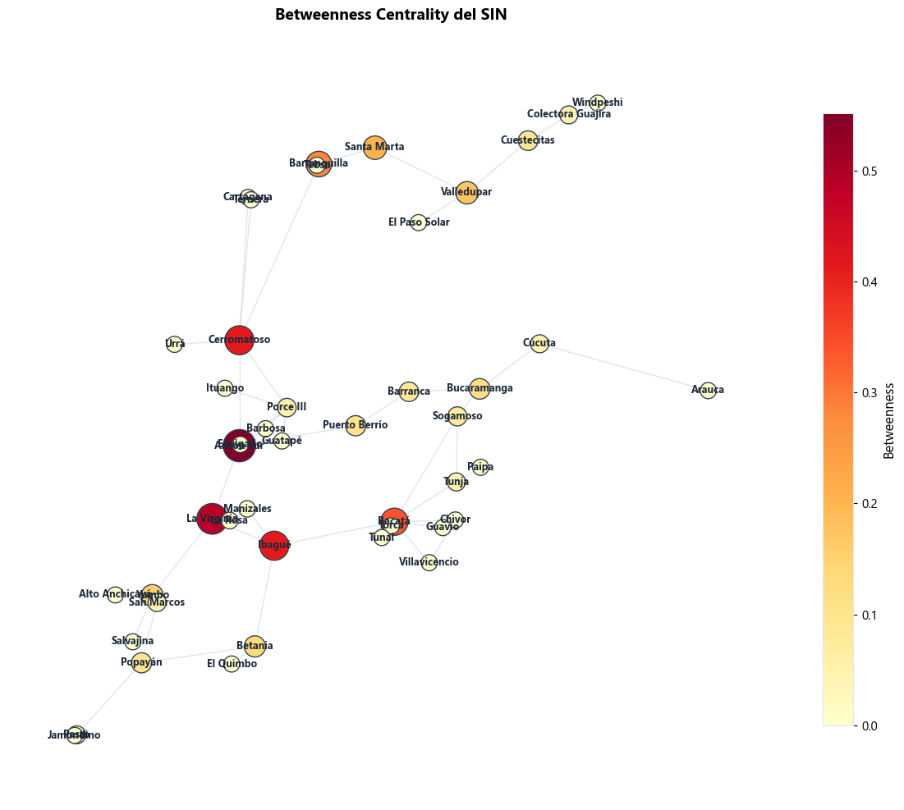
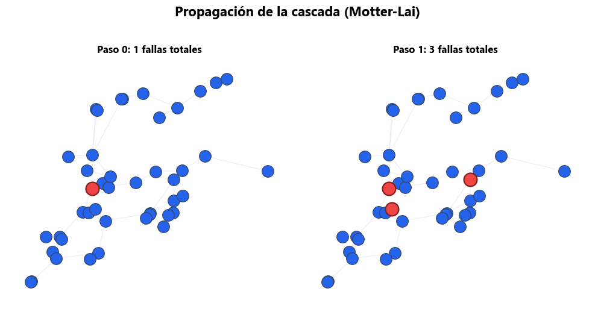
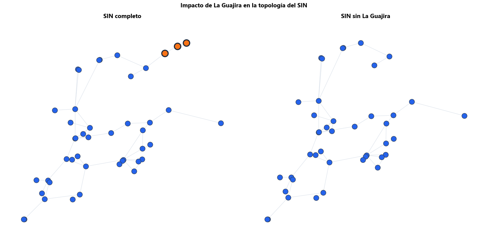

Semana 2: Redes y Topología#
MISE — Systems Analytics | Universidad de los Andes
En esta sesión exploramos cómo modelar sistemas complejos como redes (grafos). Veremos métricas de centralidad, topologías y —lo más importante— qué pasa cuando algo falla en una red.
import sys; sys.path.insert(0, '.')
from mise_utils import viz, networks, energy_data
from mise_utils.viz import COLORS, plot_network, plot_degree_distribution
import networkx as nx
import numpy as np
import matplotlib.pyplot as plt
viz.apply_mise_style()
Nivel 1 — Nivel 1 — Intuición#
Construimos la intuición con redes pequeñas y ejemplos cotidianos.
1.1 Tu primera red: 6 amigos#
Seis personas (A–F) se conocen. Vamos a representar sus relaciones como un grafo. Un grafo tiene nodos (personas) y aristas (relaciones).
# === TU PRIMERA RED ===
# Crear un grafo vacío
G6 = nx.Graph()
# Agregar nodos
G6.add_nodes_from(["A", "B", "C", "D", "E", "F"])
# Agregar aristas (conexiones)
G6.add_edges_from([
("A", "B"), ("A", "C"), ("A", "D"),
("B", "C"), ("B", "E"),
("C", "D"),
("D", "F")
])
print(f"Nodos: {G6.number_of_nodes()}")
print(f"Aristas: {G6.number_of_edges()}")
print(f"Grado de cada nodo: {dict(G6.degree())}")
Nodos: 6
Aristas: 7
Grado de cada nodo: {'A': 3, 'B': 3, 'C': 3, 'D': 3, 'E': 1, 'F': 1}
# Visualizar la red y su matriz de adyacencia
fig, axes = plt.subplots(1, 2, figsize=(14, 5))
# Red
plot_network(G6, ax=axes[0], title="Red de 6 amigos", node_size_factor=600)
# Matriz de adyacencia
networks.mostrar_matriz_adyacencia(G6, ax=axes[1])
plt.tight_layout()
plt.show()

1.2 ¿Quién es más importante?#
Hay muchas formas de medir la “importancia” de un nodo. Las cuatro métricas principales son:
Métrica |
¿Qué mide? |
Analogía |
|---|---|---|
Grado |
Número de conexiones |
¿Cuántos amigos tienes? |
Betweenness |
Cuántos caminos cortos pasan por el nodo |
¿Eres un puente entre grupos? |
Closeness |
Qué tan cerca estás de todos |
¿Puedes llegar rápido a cualquiera? |
Clustering |
Qué tan conectados están tus vecinos entre sí |
¿Tus amigos son amigos entre sí? |
# Calcular las 4 métricas de centralidad
df_metricas = networks.calcular_todas_metricas(G6)
print("Métricas de centralidad para la red de 6 amigos:\n")
df_metricas
Métricas de centralidad para la red de 6 amigos:
| nodo | grado | betweenness | closeness | clustering | |
|---|---|---|---|---|---|
| 0 | A | 3 | 0.2 | 0.7143 | 0.6667 |
| 1 | B | 3 | 0.4 | 0.6250 | 0.3333 |
| 2 | C | 3 | 0.2 | 0.7143 | 0.6667 |
| 3 | D | 3 | 0.4 | 0.6250 | 0.3333 |
| 4 | E | 1 | 0.0 | 0.4167 | 0.0000 |
| 5 | F | 1 | 0.0 | 0.4167 | 0.0000 |
# Visualizar cada métrica como mapa de calor sobre la red
fig, axes = plt.subplots(2, 2, figsize=(14, 12))
metricas = {
"Grado": dict(G6.degree()),
"Betweenness": nx.betweenness_centrality(G6),
"Closeness": nx.closeness_centrality(G6),
"Clustering": nx.clustering(G6),
}
pos = nx.spring_layout(G6, seed=42)
for ax, (nombre, valores) in zip(axes.flat, metricas.items()):
plot_network(G6, metric_values=valores, metric_name=nombre,
layout=pos, ax=ax, title=f"Centralidad: {nombre}",
node_size_factor=500)
plt.suptitle("Cuatro formas de medir importancia", fontsize=16,
fontweight="bold", y=1.02)
plt.tight_layout()
plt.show()

1.3 ¿Cómo se calcula betweenness?#
La betweenness centrality mide cuántos caminos más cortos pasan por un nodo. Es como contar cuántas veces eres “puente” entre otros dos nodos.
Veamos el algoritmo paso a paso:
# Algoritmo de betweenness — versión pedagógica
def betweenness_paso_a_paso(G):
"""Calcula betweenness centrality paso a paso (versión didáctica)."""
betweenness = {v: 0 for v in G.nodes()}
nodos = list(G.nodes())
for s in nodos:
for t in nodos:
if s != t:
# Encontrar todos los caminos más cortos de s a t
try:
caminos = list(nx.all_shortest_paths(G, s, t))
for camino in caminos:
for v in camino[1:-1]: # nodos intermedios
betweenness[v] += 1.0 / len(caminos)
except nx.NetworkXNoPath:
pass
# Normalizar
n = len(nodos)
for v in betweenness:
betweenness[v] /= ((n - 1) * (n - 2) / 2)
return betweenness
# Comparar nuestra versión con la de NetworkX
bc_manual = betweenness_paso_a_paso(G6)
bc_nx = nx.betweenness_centrality(G6)
print("Comparación betweenness (manual vs NetworkX):")
print(f"{'Nodo':<6} {'Manual':>10} {'NetworkX':>10} {'¿Iguales?':>10}")
print("-" * 40)
for nodo in sorted(G6.nodes()):
m = round(bc_manual[nodo], 4)
n_val = round(bc_nx[nodo], 4)
ok = "" if abs(m - n_val) < 0.001 else ""
print(f"{nodo:<6} {m:>10.4f} {n_val:>10.4f} {ok:>10}")
Comparación betweenness (manual vs NetworkX):
Nodo Manual NetworkX ¿Iguales?
----------------------------------------
A 0.4000 0.2000
B 0.8000 0.4000
C 0.4000 0.2000
D 0.8000 0.4000
E 0.0000 0.0000
F 0.0000 0.0000
1.4 Tres mundos de redes#
No todas las redes son iguales. Existen tres modelos fundamentales:
Modelo |
Idea clave |
¿Dónde se ve? |
|---|---|---|
Erdős-Rényi |
Conexiones al azar |
Línea base teórica |
Barabási-Albert |
“El rico se hace más rico” |
Internet, aeropuertos |
Watts-Strogatz |
Amigos de amigos + atajos |
Redes sociales |
# Algoritmo de Barabási-Albert — paso a paso
def barabasi_albert_manual(n, m, seed=42):
"""Construye una red scale-free usando preferential attachment."""
rng = np.random.default_rng(seed)
G = nx.complete_graph(m) # Empezar con grafo completo de m nodos
for nuevo_nodo in range(m, n):
# Probabilidad proporcional al grado ("el rico se hace más rico")
grados = np.array([G.degree(v) for v in G.nodes()])
probabilidades = grados / grados.sum()
# Elegir m nodos existentes para conectar
elegidos = rng.choice(list(G.nodes()), size=m, replace=False,
p=probabilidades)
G.add_node(nuevo_nodo)
for v in elegidos:
G.add_edge(nuevo_nodo, v)
return G
# Generar una red scale-free con nuestro algoritmo
G_manual = barabasi_albert_manual(100, 3)
print(f"Red Barabási-Albert manual: {G_manual.number_of_nodes()} nodos, "
f"{G_manual.number_of_edges()} aristas")
print(f"Grado máximo: {max(dict(G_manual.degree()).values())}")
print(f"Grado medio: {np.mean(list(dict(G_manual.degree()).values())):.1f}")
Red Barabási-Albert manual: 100 nodos, 294 aristas
Grado máximo: 26
Grado medio: 5.9
# Generar las tres topologías clásicas
redes = networks.generar_tres_topologias(n=200, seed=42)
# Comparación visual
fig = networks.comparar_topologias(redes)
plt.show()
C:\Users\ch.gomez171\Documents\GitHub\Systems_Analytics_MISE\notebooks\mise_utils\networks.py:279: UserWarning: Glyph 10216 (\N{MATHEMATICAL LEFT ANGLE BRACKET}) missing from current font.
fig.tight_layout()
C:\Users\ch.gomez171\Documents\GitHub\Systems_Analytics_MISE\notebooks\mise_utils\networks.py:279: UserWarning: Glyph 10217 (\N{MATHEMATICAL RIGHT ANGLE BRACKET}) missing from current font.
fig.tight_layout()
C:\Users\ch.gomez171\AppData\Local\Anaconda3new\Lib\site-packages\IPython\core\pylabtools.py:152: UserWarning: Glyph 10216 (\N{MATHEMATICAL LEFT ANGLE BRACKET}) missing from current font.
fig.canvas.print_figure(bytes_io, **kw)
C:\Users\ch.gomez171\AppData\Local\Anaconda3new\Lib\site-packages\IPython\core\pylabtools.py:152: UserWarning: Glyph 10217 (\N{MATHEMATICAL RIGHT ANGLE BRACKET}) missing from current font.
fig.canvas.print_figure(bytes_io, **kw)

# Tabla comparativa de métricas
df_topo = networks.tabla_comparacion_topologias(redes)
print("Comparación de topologías:\n")
df_topo
Comparación de topologías:
| Nodos | Aristas | ⟨k⟩ Grado medio | k_max | Clustering | Camino medio | Componentes | |
|---|---|---|---|---|---|---|---|
| Topología | |||||||
| Erdős-Rényi | 200 | 569 | 5.69 | 11 | 0.0395 | 3.227 | 2 |
| Barabási-Albert | 200 | 591 | 5.91 | 41 | 0.1023 | 2.835 | 1 |
| Watts-Strogatz | 200 | 600 | 6.00 | 8 | 0.4379 | 4.415 | 1 |
Nota: Observación clave: Barabási-Albert tiene pocos nodos con grado MUY alto (hubs) y muchos nodos con grado bajo. Watts-Strogatz tiene alto clustering. Erdős-Rényi es el “control” — todo es homogéneo.
1.5 Robusto pero frágil#
Las redes scale-free (como las de aeropuertos) son robustas ante fallas aleatorias pero frágiles ante ataques dirigidos a los hubs.
Esto se llama la propiedad “robust yet fragile” (Albert et al., 2000).
# Crear red de aeropuertos (scale-free)
G_aero = networks.crear_red_aeropuertos(n=100, seed=42)
print(f"Red de aeropuertos: {G_aero.number_of_nodes()} nodos, "
f"{G_aero.number_of_edges()} aristas")
# Comparar resiliencia
fig = networks.comparar_resiliencia(G_aero, seed=42)
plt.show()
Red de aeropuertos: 100 nodos, 196 aristas

Interpretación: Con ataque aleatorio, la red aguanta la eliminación de ~40% de los nodos sin colapsar. Pero con ataque dirigido a los hubs, basta con eliminar ~15% para destruir la conectividad.
Nivel 2 — Nivel 2 — Energía#
Aplicamos los conceptos al Sistema Interconectado Nacional (SIN) de Colombia.
2.1 El SIN como grafo#
El Sistema Interconectado Nacional (SIN) conecta las regiones de Colombia mediante líneas de transmisión de alta tensión. Modelemos esta red como un grafo.
[WARN] Nota: Esta es una representación simplificada y pedagógica del SIN. Para datos reales, consultar XM.
# Cargar la red del SIN
G_sin = energy_data.crear_red_sin_simplificada()
print(f"Red SIN simplificada: {G_sin.number_of_nodes()} nodos, "
f"{G_sin.number_of_edges()} aristas")
print(f"Regiones: {sorted(set(nx.get_node_attributes(G_sin, 'region').values()))}")
# Visualizar con posiciones geográficas (lat/lon)
pos_geo = {n: (G_sin.nodes[n]["lon"], G_sin.nodes[n]["lat"])
for n in G_sin.nodes()}
# Colorear por región
regiones = nx.get_node_attributes(G_sin, "region")
regiones_unicas = sorted(set(regiones.values()))
colores_region = plt.cm.Set3(np.linspace(0, 1, len(regiones_unicas)))
mapa_color = {r: colores_region[i] for i, r in enumerate(regiones_unicas)}
node_colors = [mapa_color[regiones[n]] for n in G_sin.nodes()]
fig, ax = plt.subplots(figsize=(12, 10))
nx.draw_networkx_edges(G_sin, pos_geo, ax=ax,
edge_color=COLORS["edge_default"],
width=1.5, alpha=0.6)
nx.draw_networkx_nodes(G_sin, pos_geo, ax=ax,
node_color=node_colors, node_size=200,
edgecolors="#334155", linewidths=1.0)
nx.draw_networkx_labels(G_sin, pos_geo, ax=ax,
font_size=7, font_weight="bold")
# Leyenda de regiones
for region, color in mapa_color.items():
ax.scatter([], [], c=[color], s=100, label=region)
ax.legend(loc="lower left", fontsize=8, ncol=2, title="Región")
ax.set_title("Sistema Interconectado Nacional (SIN) — Simplificado",
fontsize=14, fontweight="bold")
ax.set_xlabel("Longitud")
ax.set_ylabel("Latitud")
plt.tight_layout()
plt.show()
Red SIN simplificada: 45 nodos, 52 aristas
Regiones: ['Antioquia', 'Arauca', 'Boyacá', 'Caldas', 'Cauca', 'Cesar', 'Costa', 'Cundinamarca', 'Córdoba', 'Guajira', 'Huila', 'Meta', 'N. Santander', 'Nariño', 'Risaralda', 'Santander', 'Tolima', 'Valle']

2.2 Cuellos de botella del SIN#
¿Cuáles son los nodos más críticos del SIN? Usamos betweenness centrality para identificar los “cuellos de botella” — nodos por los que pasan muchos caminos.
# Calcular betweenness para el SIN
bc_sin = nx.betweenness_centrality(G_sin)
# Visualizar betweenness como mapa de calor
fig, ax = plt.subplots(figsize=(12, 10))
plot_network(G_sin, metric_values=bc_sin, metric_name="Betweenness",
layout=pos_geo, ax=ax,
title="Betweenness Centrality del SIN",
show_labels=True, node_size_factor=200)
plt.tight_layout()
plt.show()
# Top 5 nodos más críticos
df_sin = networks.calcular_todas_metricas(G_sin)
print("\n**Nivel 3 —** Top 5 nodos con mayor betweenness (cuellos de botella):")
print(df_sin.nlargest(5, "betweenness")[["nodo", "grado", "betweenness"]].to_string(index=False))

**Nivel 3 —** Top 5 nodos con mayor betweenness (cuellos de botella):
nodo grado betweenness
Ancón Sur 7 0.5514
La Virginia 4 0.4861
Ibagué 4 0.4131
Cerromatoso 6 0.4123
Bacatá 8 0.3402
2.3 N-1 vs. Ataque dirigido#
El criterio N-1 dice que el sistema debe operar correctamente si se pierde un componente cualquiera. Comparemos qué pasa cuando:
Se pierde un nodo aleatorio
Se pierde el nodo de mayor betweenness
# Simular N-1: pérdida de un nodo aleatorio vs. el más crítico
nodo_critico = max(bc_sin, key=bc_sin.get)
rng = np.random.default_rng(42)
nodos_lista = list(G_sin.nodes())
nodo_aleatorio = rng.choice(nodos_lista)
print(f"Nodo aleatorio seleccionado: {nodo_aleatorio}")
print(f"Nodo más crítico (betweenness): {nodo_critico}")
print()
for nombre, nodo in [("Aleatorio", nodo_aleatorio), ("Más crítico", nodo_critico)]:
G_test = G_sin.copy()
G_test.remove_node(nodo)
n_comp = nx.number_connected_components(G_test)
if n_comp > 0:
giant = max(len(c) for c in nx.connected_components(G_test))
else:
giant = 0
pct = giant / G_sin.number_of_nodes() * 100
print(f"Removiendo {nombre} ({nodo}):")
print(f" Componentes: {n_comp}")
print(f" Componente gigante: {giant} nodos ({pct:.1f}% del original)")
print()
Nodo aleatorio seleccionado: Ituango
Nodo más crítico (betweenness): Ancón Sur
Removiendo Aleatorio (Ituango):
Componentes: 1
Componente gigante: 44 nodos (97.8% del original)
Removiendo Más crítico (Ancón Sur):
Componentes: 3
Componente gigante: 27 nodos (60.0% del original)
2.4 Simulación de cascada#
Cuando un nodo falla, su carga (flujo de potencia) se redistribuye. Si otros nodos quedan sobrecargados, también fallan. Esto es una cascada.
Usamos el modelo Motter-Lai (2002):
Carga = betweenness centrality
Capacidad = (1 + α) × carga inicial
Si carga > capacidad → falla
# Simulación de cascada (Motter-Lai) — paso a paso
def cascada_paso_a_paso(G, nodo_falla, alpha=0.2):
"""Simula una cascada de fallas usando el modelo Motter-Lai."""
G_work = G.copy()
# Paso 1: Calcular carga inicial (betweenness)
carga_inicial = nx.betweenness_centrality(G_work)
# Paso 2: Definir capacidad con margen de tolerancia
capacidad = {v: (1 + alpha) * carga_inicial[v] for v in G_work}
# Paso 3: Falla inicial
fallados = {nodo_falla}
G_work.remove_node(nodo_falla)
historial = [fallados.copy()]
print(f"Paso 0: Falla inicial de '{nodo_falla}'")
print(f" Nodos fallados: {len(fallados)}")
paso = 0
while True:
paso += 1
# Recalcular carga después de las fallas
carga_actual = nx.betweenness_centrality(G_work)
# Detectar nodos sobrecargados
nuevos_fallados = set()
for v in list(G_work.nodes()):
if carga_actual.get(v, 0) > capacidad.get(v, 0):
nuevos_fallados.add(v)
if not nuevos_fallados:
print(f"\nPaso {paso}: Sin nuevas fallas — cascada detenida ")
break
fallados |= nuevos_fallados
for v in nuevos_fallados:
G_work.remove_node(v)
historial.append(fallados.copy())
print(f"Paso {paso}: {len(nuevos_fallados)} nodos sobrecargados → "
f"{len(fallados)} fallas totales")
return historial
# Ejecutar cascada desde el nodo más crítico
print("=" * 55)
print(" CASCADA EN EL SIN (modelo Motter-Lai, α = 0.2)")
print("=" * 55)
print()
historial = cascada_paso_a_paso(G_sin, nodo_critico, alpha=0.2)
print(f"\nResultado final: {len(historial[-1])} de "
f"{G_sin.number_of_nodes()} nodos fallaron "
f"({len(historial[-1])/G_sin.number_of_nodes()*100:.1f}%)")
=======================================================
CASCADA EN EL SIN (modelo Motter-Lai, α = 0.2)
=======================================================
Paso 0: Falla inicial de 'Ancón Sur'
Nodos fallados: 1
Paso 1: 2 nodos sobrecargados → 3 fallas totales
Paso 2: Sin nuevas fallas — cascada detenida
Resultado final: 3 de 45 nodos fallaron (6.7%)
# Visualizar la cascada usando la función del módulo
cascada_res = networks.simular_cascada(G_sin, nodo_critico, alpha=0.2)
fig = networks.plot_cascada_pasos(G_sin, cascada_res, layout=pos_geo)
plt.show()

2.5 ¿Qué cambia con La Guajira?#
La Guajira es la nueva frontera renovable de Colombia (eólica y solar). Sus nodos están conectados de forma radial al resto del SIN.
¿Qué pasa si removemos los nodos de La Guajira?
# Identificar nodos de La Guajira
nodos_guajira = [n for n, d in G_sin.nodes(data=True)
if d.get("region") == "Guajira"]
print(f"Nodos de La Guajira: {nodos_guajira}")
# Crear SIN sin La Guajira
G_sin_no_guajira = G_sin.copy()
G_sin_no_guajira.remove_nodes_from(nodos_guajira)
# Comparar
fig, axes = plt.subplots(1, 2, figsize=(16, 8))
# Con Guajira
plot_network(G_sin, layout=pos_geo, ax=axes[0],
title="SIN completo", show_labels=False,
node_size_factor=150,
highlight_nodes=nodos_guajira,
highlight_color=COLORS["warning"])
# Sin Guajira
pos_geo_sin_g = {n: pos_geo[n] for n in G_sin_no_guajira.nodes()}
plot_network(G_sin_no_guajira, layout=pos_geo_sin_g, ax=axes[1],
title="SIN sin La Guajira", show_labels=False,
node_size_factor=150)
plt.suptitle("Impacto de La Guajira en la topología del SIN",
fontsize=14, fontweight="bold")
plt.tight_layout()
plt.show()
# Métricas comparativas
print("\nComparación:")
print(f"{'Métrica':<30} {'Con Guajira':>15} {'Sin Guajira':>15}")
print("-" * 60)
print(f"{'Nodos':<30} {G_sin.number_of_nodes():>15} "
f"{G_sin_no_guajira.number_of_nodes():>15}")
print(f"{'Aristas':<30} {G_sin.number_of_edges():>15} "
f"{G_sin_no_guajira.number_of_edges():>15}")
print(f"{'Clustering medio':<30} {nx.average_clustering(G_sin):>15.4f} "
f"{nx.average_clustering(G_sin_no_guajira):>15.4f}")
print(f"{'Componentes':<30} "
f"{nx.number_connected_components(G_sin):>15} "
f"{nx.number_connected_components(G_sin_no_guajira):>15}")
Nodos de La Guajira: ['Cuestecitas', 'Colectora Guajira', 'Windpeshi']

Comparación:
Métrica Con Guajira Sin Guajira
------------------------------------------------------------
Nodos 45 42
Aristas 52 49
Clustering medio 0.1166 0.1249
Componentes 1 1
Nivel 3 — Nivel 3 — Profesional#
Para ir más allá: literatura y herramientas avanzadas.
3.1 Lectura recomendada: Resiliencia de redes#
Papers fundamentales:
Albert, R., Jeong, H., & Barabási, A.-L. (2000). “Error and attack tolerance of complex networks.” Nature, 406, 378-382. — El paper que demostró la propiedad “robust yet fragile” de las redes scale-free.
Motter, A. E., & Lai, Y.-C. (2002). “Cascade-based attacks on complex networks.” Physical Review E, 66(6), 065102. — El modelo de cascada que implementamos en este notebook.
Buldyrev, S. V., et al. (2010). “Catastrophic cascade of failures in interdependent networks.” Nature, 464, 1025-1028. — Extensión a redes interdependientes (e.g., eléctrica + telecomunicaciones).
Recursos adicionales:
Colorado State Power Systems Resilience — Grupo de investigación en resiliencia
Resiltech — Herramientas de análisis de resiliencia
NetworkX Documentation — Librería que usamos en este curso
3.2 Casos de prueba IEEE#
Para análisis profesional de redes eléctricas, la IEEE proporciona casos de prueba estándar:
Caso |
Descripción |
Nodos |
Uso |
|---|---|---|---|
IEEE 14-bus |
Red pequeña de prueba |
14 |
Validación de algoritmos |
IEEE 30-bus |
Red de tamaño medio |
30 |
Estudios de flujo de carga |
IEEE 118-bus |
Red grande realista |
118 |
Análisis de contingencia |
IEEE 300-bus |
Red muy grande |
300 |
Benchmarking computacional |
Para usar: Los archivos de datos IEEE se pueden cargar con PYPOWER o pandapower.
Cierre de la Semana 2#
Lo que aprendimos:#
Representar un sistema como red (nodos + aristas + atributos)
Medir importancia con 4 métricas de centralidad
Distinguir 3 tipos de topología y sus propiedades
Evaluar resiliencia ante fallas aleatorias vs. ataques dirigidos
Simular cascadas de fallas con el modelo Motter-Lai
Aplicar todo esto al SIN de Colombia
Para la Semana 3: Difusión y Contagio#
¿Cómo se propaga una innovación (paneles solares) por una red social?
¿Qué determina si una tecnología se adopta masivamente o muere?
Modelos de Bass, umbrales y epidemiológicos (SIR/SIS)
“Las redes no solo importan por su estructura — importan por lo que fluye a través de ellas.”